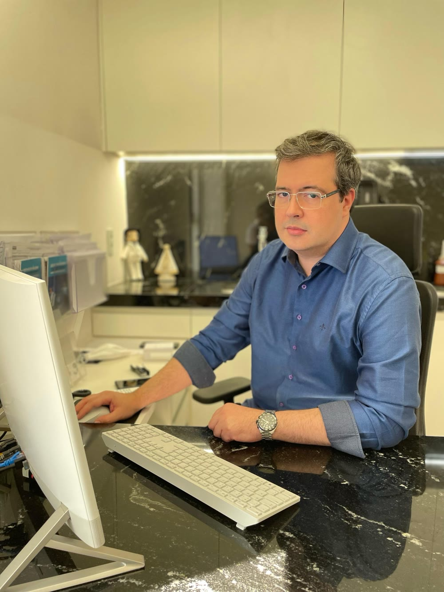
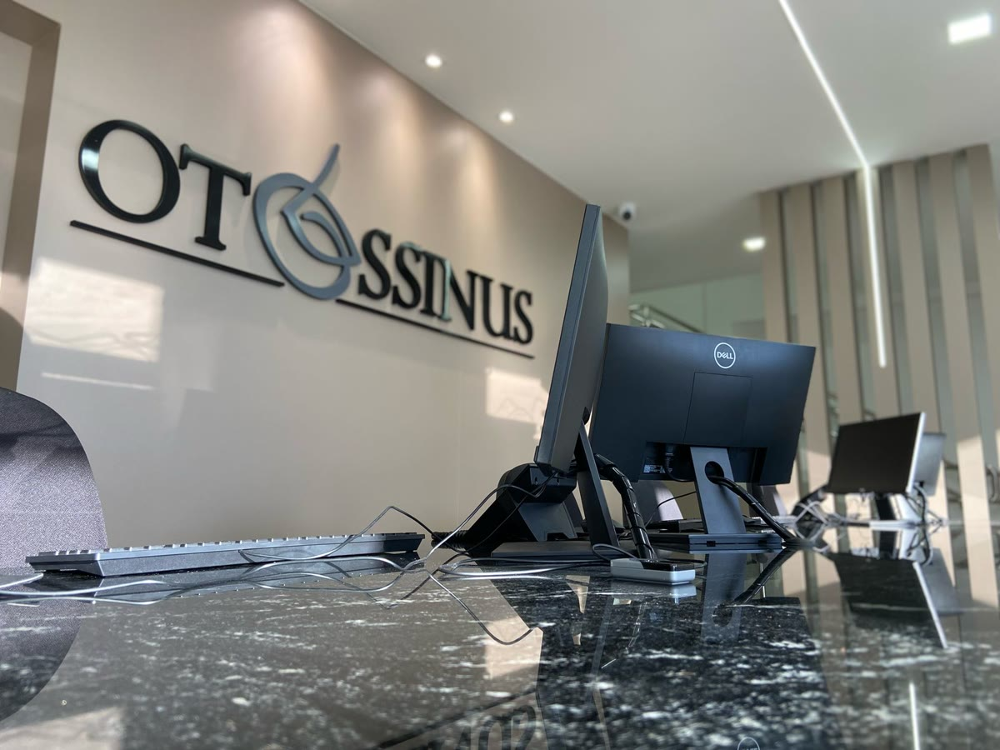
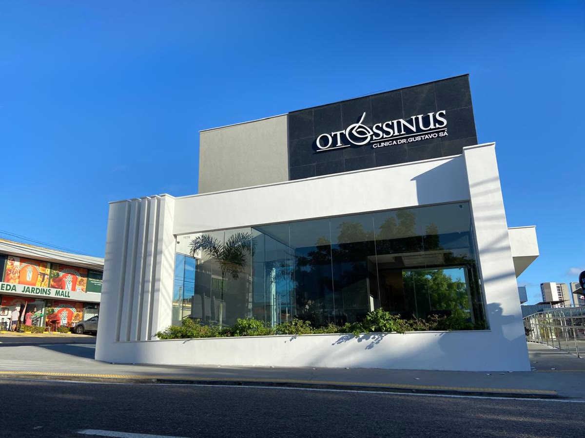

OtorrinolaringologiaNatal · RN
Dr. Gustavo Sá
Ouvido, nariz e garganta para adultos e crianças, no consultório Otossinus, em Capim Macio.
Escutar, respirar e comunicar: cuidado individual em cada fase da vida.
4,7nota no Google · 91 avaliações
Áreas de atendimento
Por onde você quer começar?
Ouvido
Ouvido e audição
Perda auditiva e doenças cocleares. A microcirurgia otológica integra a atuação.
Conhecer a área →Nariz
Nariz e respiração
Sinusite e rinologia funcional.
Conhecer a área →Garganta
Garganta e voz
Amígdalas, adenoide e comunicação.
Conhecer a área →Infância
Otorrino infantil
Ouvido, nariz e garganta na infância. A observação da família ajuda a descrever o que mudou.
Cuidado infantil →Cirurgia endoscópica nasossinusal, septoplastia, turbinectomia, rinoplastia e amigdalectomia fazem parte da atuação. A indicação é sempre individual, definida em consulta.
Situações do cotidiano
Mudanças que merecem atenção.
A conversa ficou diferente?
Dificuldade para acompanhar falas ou perceber sons merece avaliação. Conte quando começou e se atinge um ouvido ou os dois.
Ouvido e audiçãoO nariz vive obstruído?
Evolução, repetição e contexto ajudam a entender a respiração. Obstrução, sozinha, não confirma um diagnóstico.
Nariz e respiraçãoA voz ou a garganta mudou?
Conte quando a mudança começou, quanto tempo dura e como interfere na sua rotina.
Garganta e vozComo é a consulta
Da escuta ao próximo passo.
- 01Conte sua história
Quando começou, o que mudou e suas dúvidas.
- 02Avaliação individual
A história e o exame orientam os próximos passos.
- 03Converse sobre o cuidado
Entenda possibilidades, limites e acompanhamento.

Recepção da OtossinusO médico
Conheça o Dr. Gustavo Sá.
Gustavo Henrique Marques de Sá, otorrinolaringologista em Natal, atende adultos e crianças na Otossinus, em Capim Macio.
- FormaçãoUniversidade Federal de Pernambuco
- Atuação institucionalDefesa Profissional · ABORL‑CCF
- Coautoria científica · 2010Alterações laríngeas em professores de NatalLer o trabalho ↗
Ciência e comunicação
“A voz disfônica do professor pode comprometer as relações de ensino-aprendizagem, uma vez que a compreensão da mensagem pode ser dificultada.”
Gustavo Henrique Marques de Sá e coautores · pôster P-005 · 2010 ↗
Onde atendo
Seu ponto de chegada em Natal.

Atendimento com hora marcada. Confirme dia, hora e condições com a equipe.
Dúvidas frequentes
Antes de agendar
O atendimento inclui adultos e crianças?
Sim. O atendimento em Otorrinolaringologia abrange adultos e crianças de qualquer idade. Confirme a disponibilidade com a recepção.
O horário escolhido fica reservado?
Não. É somente uma preferência. A recepção precisa confirmar manualmente a disponibilidade e o agendamento.
Toda queixa exige um procedimento?
Não. A avaliação individual orienta as possibilidades de cuidado. Conhecer um procedimento não significa ter indicação para realizá-lo.
Vamos combinar
Qual dia e hora funcionam para você?
Escolha uma preferência. A recepção confirma manualmente a disponibilidade e o agendamento. Isto não é uma reserva nem uma consulta à agenda.
Contato
Seu próximo passo pode ser uma conversa.
Otossinus · Natal · (84) 3346-4677